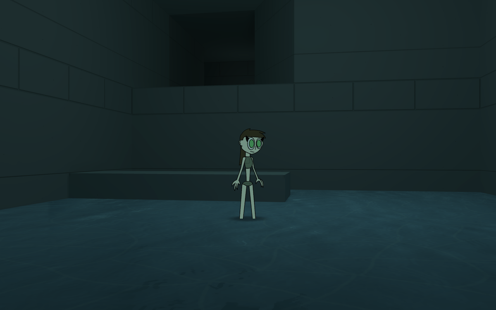
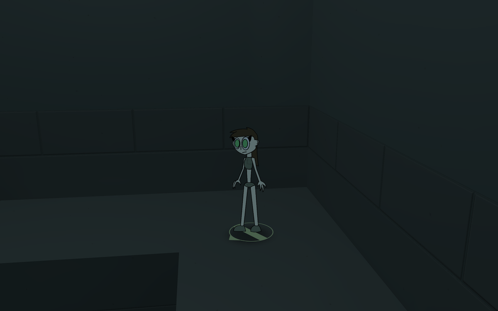
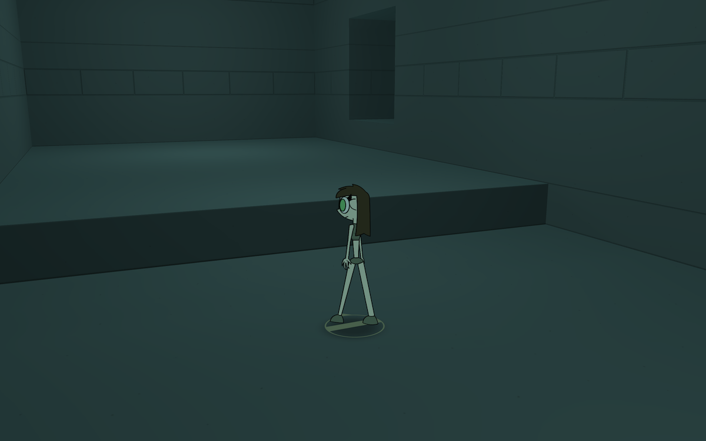

No track yet :)
Download the Prototype (V.2)
Uno-Prospero (Or Unofficial Prospero or just Prospero) is a fan game and my view on the cancelled Valve game that's gonna be released to macOS with no mouse and keyboard controls. Felt like the gameplay would be better with a controller.
The game is early in development so I don't have a lot to give except for a little demo. And these images.


